Fonasa + seguro complementario: la verdad detrás de esta combinación
Se vende como la alternativa barata a una Isapre. Puede servir, pero tiene reglas que casi nadie lee antes de contratar. Te las explicamos con dos pólizas reales y ejercicios con números.
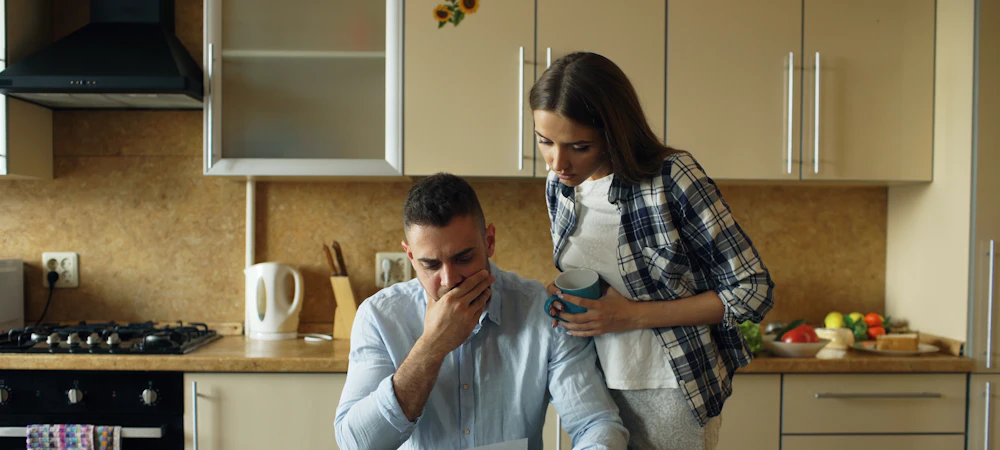
Mucha gente se queda en Fonasa y le suma un seguro complementario, pensando que así queda igual de cubierta que en una Isapre y pagando menos. A veces funciona, sobre todo en lo ambulatorio. Pero en una hospitalización, que es cuando de verdad se necesita, la historia suele ser otra.
Para explicarlo usamos dos pólizas reales, que llamaremos Seguro A, una póliza colectiva a la que las personas se suman por su cuenta a través de un corredor, y Seguro B, un seguro individual de libre elección al 60%. No mostramos el nombre de las aseguradoras porque el punto no es una en particular: reglas como estas son comunes en los seguros complementarios.
Cómo funciona y cuánto cuesta
Un seguro complementario no reemplaza a Fonasa: funciona encima de lo que Fonasa ya cubrió. Primero Fonasa bonifica, y después el seguro te reembolsa un porcentaje de lo que queda, con sus propios topes y un deducible. En general cuestan entre $30.000 y $50.000 al mes por persona, que se suman a tu 7% de Fonasa. En el Seguro A, el titular solo paga UF 0,68 al mes, unos $28.027, y en el Seguro B cada persona paga entre UF 1,10 y UF 1,51 según su edad, entre los 21 y los 70 años: unos $45.222 a $61.742. Si te lo da tu empresa, puede salirte más barato o gratis.
| Condición | Seguro A | Seguro B |
|---|---|---|
| Precio al mes | UF 0,68 el titular solo | UF 1,10 a UF 1,51 por persona, según la edad |
| Reembolso | 60% | 60% (80% en RedSalud), o 30% si tu sistema de salud no bonificó nada |
| Deducible al año | UF 1 | UF 1 |
| Tope por consulta | UF 1 | UF 0,5 |
| Día cama | UF 3 por día | UF 4 por día |
| Topes generales | UF 50 por evento y UF 250 al año | UF 450 al año, y UF 35 al año en lo ambulatorio |
| Parto normal y cesárea | UF 20 y UF 30 | UF 30 y UF 40 |
| Clínicas | Excluye Alemana, Las Condes, UC San Carlos y Universidad de los Andes | En Alemana, Las Condes, UC San Carlos y Universidad de los Andes el reembolso baja al 25% |
| Carencia | No tiene | 60 días para resonancias, tomografías y procedimientos |
| Edad máxima | Hasta los 64 años y 364 días | Hasta los 99 años y 364 días |
| Preexistencias | No las cubre | No las cubre |
Condiciones de dos pólizas reales. Cada seguro tiene las suyas, así que revisa siempre las de tu póliza.
Así aparecen los cuadros de coberturas en las pólizas. Primero, el del Seguro A:
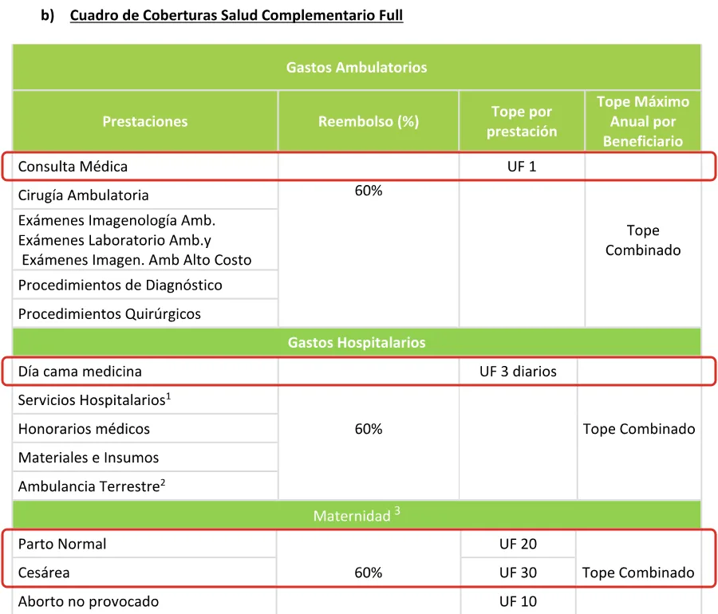
Y el del Seguro B, que también muestra el tope anual y el deducible:
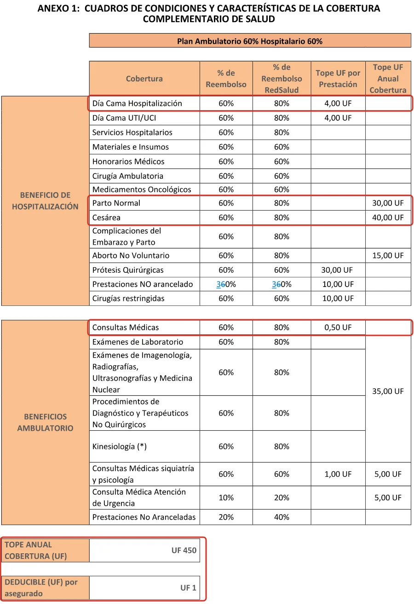
Y estos son los precios de cada póliza, en UF al mes:
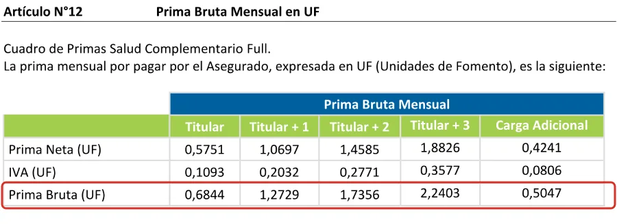
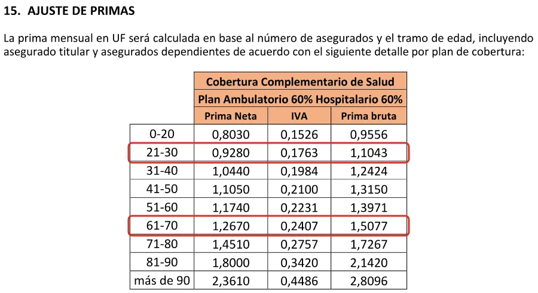
La letra chica 1: la bonificación mínima (BMI)
Casi todos los seguros complementarios exigen que tu sistema de salud haya cubierto algo antes de pagar. En el rubro se conoce como BMI, o bonificación mínima, y cada póliza la aplica distinto:
- En el Seguro A son dos reglas. Primero, Fonasa tiene que haber cubierto al menos $1 de la prestación: si no cubrió nada, salvo algunas excepciones que detalla la póliza, el seguro tampoco. Segundo, si Fonasa cubrió menos del 50%, el seguro calcula como si hubiera cubierto la mitad, y solo te reembolsa sobre el otro 50% del valor.
- En el Seguro B, si Fonasa no bonificó nada, el reembolso baja del 60% al 30%. Y en Clínica Alemana, Las Condes, UC San Carlos y Universidad de los Andes, el reembolso es de solo un 25%.
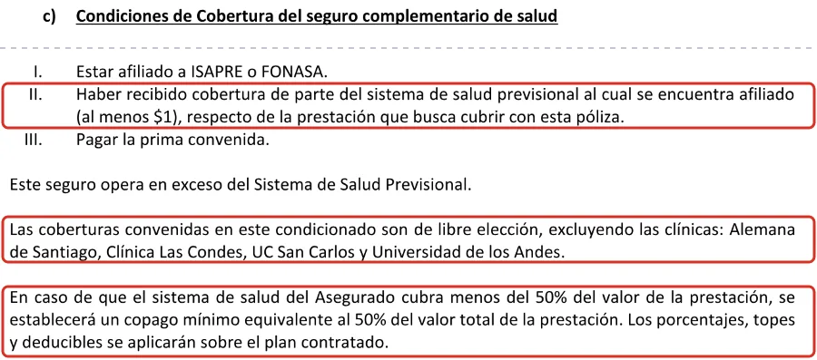
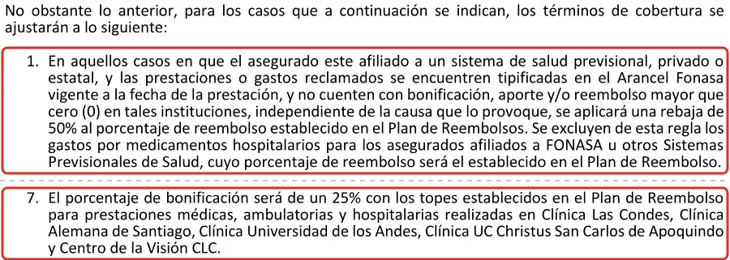
¿Cuándo Fonasa no cubre nada? Por ejemplo, si estás en el tramo A, que no puede comprar bonos para atenderse en clínicas privadas, o si te atiendes con un prestador que no tiene convenio con Fonasa. Justo en esos casos, el seguro cubre menos o nada.
Ejercicio 1: una consulta de traumatología en Clínica Santa María
En el arancel 2026 de Fonasa, la consulta de traumatología es el código 01 01 310, y Fonasa bonifica $7.690:
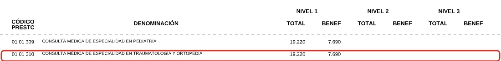
En el buscador de aranceles de Clínica Santa María, esa consulta cuesta $57.500 particular y $46.100 para un paciente Fonasa:
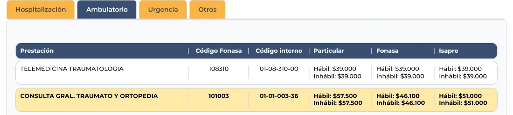
| Con bono Fonasa | Seguro A | Seguro B |
|---|---|---|
| Precio para un paciente Fonasa | $46.100 | $46.100 |
| Cubre Fonasa | $7.690 (16,7%) | $7.690 (16,7%) |
| Queda por pagar | $38.410 | $38.410 |
| Base que usa el seguro | $23.050 (la mitad) | $38.410 |
| Reembolso calculado (60%) | $13.830 | $23.046 |
| Tope por consulta | UF 1: $40.951 | UF 0,5: $20.475 |
| Te devuelve el seguro | $13.830 | $20.475 |
| Pagas tú | $24.580 | $17.935 |
| Sin bono, como en el tramo A | Seguro A | Seguro B |
|---|---|---|
| Precio particular | $57.500 | $57.500 |
| Cubre Fonasa | $0 | $0 |
| Te devuelve el seguro | $0 | $17.250 (30%) |
| Pagas tú | $57.500 | $40.250 |
Antes del deducible. Como Fonasa cubre menos de la mitad, el Seguro A calcula sobre el 50% del valor y no sobre lo que queda. El Seguro B sí calcula sobre lo que queda, pero su tope por consulta lo deja en $20.475. Montos en UF con la UF del 17 de septiembre de 2026.
La letra chica 2: el deducible
Antes de devolverte plata, el seguro descuenta un deducible cada año. En los dos seguros del ejemplo es de UF 1, unos $41.000, y se descuenta de lo que el seguro te iba a reembolsar:
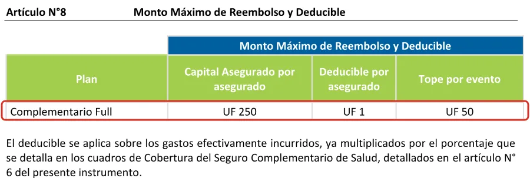
Mira qué pasa con las consultas del ejercicio anterior, en las que el Seguro A calcula un reembolso de $13.830 cada vez:
Ejercicio 2: las consultas del año con el Seguro A
| Consulta | Reembolso calculado | Se va al deducible | Te devuelven |
|---|---|---|---|
| 1.ª | $13.830 | $13.830 | $0 |
| 2.ª | $13.830 | $13.830 | $0 |
| 3.ª | $13.830 | $13.291 | $539 |
| 4.ª | $13.830 | $0 | $13.830 |
| 5.ª | $13.830 | $0 | $13.830 |
Las dos primeras consultas del año no te devuelven nada, y la tercera, apenas $539. Si vas poco al médico, puede que en todo el año recuperes muy poco de lo que pagaste en primas.
Ejercicio 3: una resonancia de rodilla en Clínica Santa María
Ahora con valores reales. En el arancel 2026 de Fonasa, la resonancia de rodilla es el código 04 05 013, con un valor de $176.560 y una bonificación de $88.280:
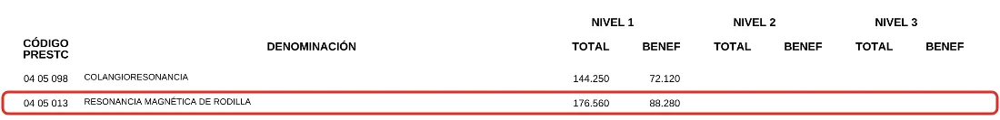
Con ese código la buscas en el buscador de aranceles de Clínica Santa María, y aparecen sus tres precios: particular, Fonasa e Isapre.
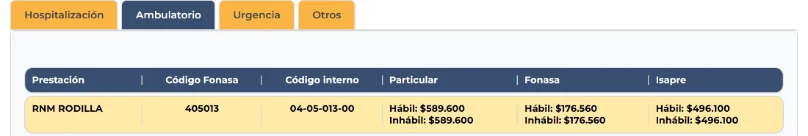
| Con bono Fonasa, Seguro A o B | Sin bono, Seguro A | Sin bono, Seguro B | |
|---|---|---|---|
| Precio en la clínica | $176.560 | $589.600 | $589.600 |
| Cubre Fonasa | $88.280 | $0 | $0 |
| Queda por pagar | $88.280 | $589.600 | $589.600 |
| Reembolso del seguro | $52.968 (60%) | $0 | $176.880 (30%) |
| Pagas tú | $35.312 | $589.600 | $412.720 |
Antes del deducible. Con bono, Fonasa cubre justo la mitad, así que en el Seguro A no se aplica la rebaja. Sin bono, como en el tramo A, la clínica cobra el precio particular.
Ojo con la carencia: en el Seguro B, las resonancias no se cubren durante los primeros 60 días desde que contratas.
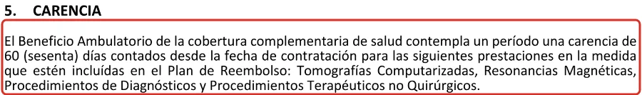
En lo ambulatorio y con bono Fonasa, la combinación funciona: pagas unos $35 mil por una resonancia que particular cuesta $589.600. Ahí un seguro complementario sí rinde. Sin bono, en cambio, la cuenta cambia por completo.
Donde se queda corto: la hospitalización
Si el seguro te lo da tu empresa, aprovéchalo: en lo ambulatorio puede funcionar bien, en consultas, exámenes o kinesiología. Pero en lo hospitalario la cobertura es baja. Mira lo que pasa con un día de hospitalización en la misma clínica.
Ejercicio 4: un día de hospitalización en Clínica Santa María
Una habitación médico quirúrgica corresponde al código Fonasa 02 01 001. Por ese día cama, Fonasa bonifica $4.720:
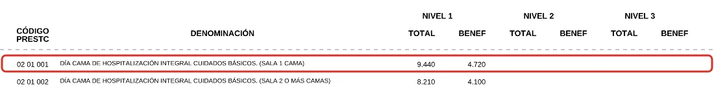
Pero la clínica le cobra $565.604 por ese día a un paciente Fonasa:
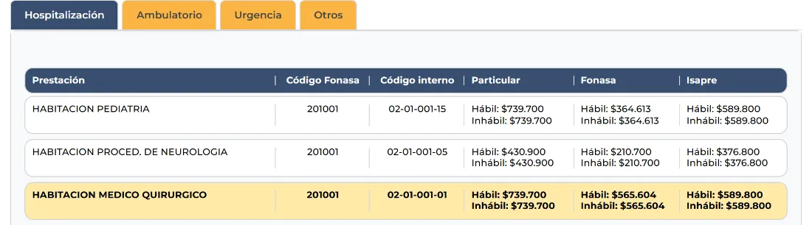
| Seguro A | Seguro B | |
|---|---|---|
| Precio para un paciente Fonasa | $565.604 | $565.604 |
| Cubre Fonasa | $4.720 (0,8%) | $4.720 (0,8%) |
| Queda por pagar | $560.884 | $560.884 |
| Reembolso calculado | $169.681 (60% de la mitad) | $336.530 (60%) |
| Tope por día | UF 3: $122.853 | UF 4: $163.804 |
| Te devuelve el seguro | $122.853 | $163.804 |
| Pagas tú | $438.031 | $397.080 |
Por un solo día y solo la habitación, sin pabellón, honorarios médicos, medicamentos ni insumos. Topes calculados con la UF del 17 de septiembre de 2026: $40.950,90.
Fonasa cubre menos del 1% del día cama, y aunque el seguro reembolsa, su tope por día lo deja muy lejos de lo que cobra la clínica. Y no es solo el día cama. Esto es lo que más pesa en una hospitalización:
- Día cama con tope. El Seguro A cubre hasta UF 3 por día y el Seguro B hasta UF 4, sin importar lo que cobre la clínica, como viste en el ejercicio 4.
- La regla del 50% pesa más. En una hospitalización en clínica, Fonasa suele cubrir muy poco de la cuenta. Con la regla del Seguro A, el seguro calcula sobre la mitad, así que te reembolsa como máximo el 30% del total, y eso antes de aplicar los topes.
- Tope por evento. En el Seguro A, todo lo de una misma enfermedad o accidente tiene un tope de UF 50, unos $2 millones. Una hospitalización con cirugía puede superar ese monto con facilidad.
- Sin CAEC. Si la cuenta es catastrófica, el seguro no tiene un techo de gastos como la CAEC de las Isapres.
- Maternidad con topes bajos. El parto normal tiene un tope de UF 20 en el Seguro A y de UF 30 en el B, y la cesárea, de UF 30 y UF 40. Además, en el Seguro A solo se cubre si el embarazo empezó después de contratar, y solo para la titular o la cónyuge o pareja del titular. Lo comparamos en qué pasa si contratas una Isapre estando embarazada.
- Reembolso, no convenio. Algunas consultas se reembolsan en línea al momento, pero en una hospitalización normalmente pagas la cuenta y después pides el reembolso con boletas y formularios, y eso demora.
Ejercicio 5: una urgencia en Clínica Indisa
Una lesión de rodilla, un día hábil: consulta de urgencia y la misma resonancia del ejercicio 3, el código 04 05 013. Clínica Indisa publica solo sus precios particulares, y su consulta de urgencia no tiene código Fonasa asociado:
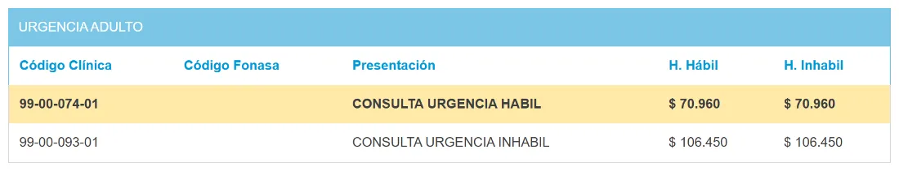
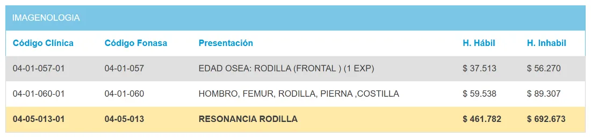
La cuenta parte en $532.742. Fonasa bonifica los $88.280 que su arancel fija para la resonancia, y nada por la consulta de urgencia, porque no está en el arancel. Y ojo con el Seguro B: la consulta de urgencia se reembolsa al 10%, no al 60%.
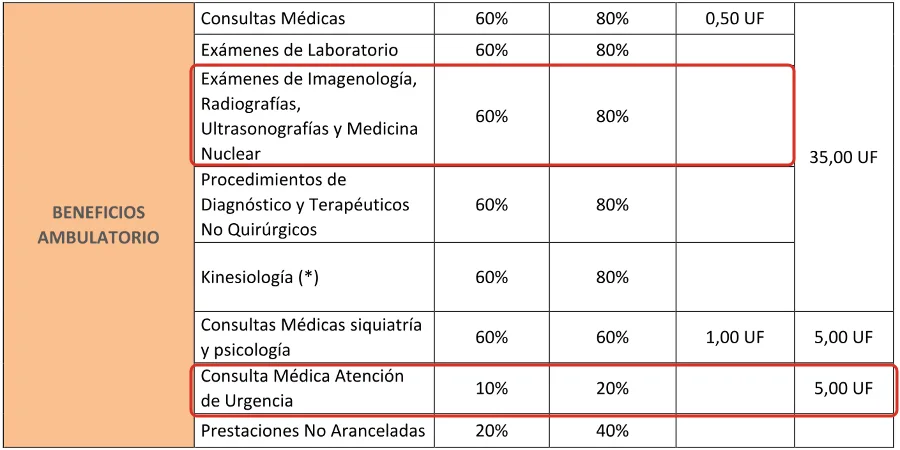
| Solo Fonasa | Seguro A | Seguro B | |
|---|---|---|---|
| Consulta de urgencia | $70.960 | $70.960 | $70.960 |
| Resonancia de rodilla | $461.782 | $461.782 | $461.782 |
| Cubre Fonasa | $88.280 (16,6%) | $88.280 | $88.280 |
| Reembolso por la consulta | — | $0 | $7.096 (10%) |
| Reembolso por la resonancia | — | $138.535 (60% de la mitad) | $224.101 (60%) |
| Pagas tú | $444.462 | $305.927 | $213.265 |
Antes del deducible y en horario hábil. En horario inhábil, la consulta sube a $106.450 y la resonancia a $692.673. En el Seguro A la consulta no se reembolsa, porque Fonasa no bonificó nada de ella, y en la resonancia se aplica la regla del 50%. En el Seguro B hay que llevar más de 60 días con la póliza, por la carencia de las resonancias.
Para comparar, así cubre esta misma urgencia uno de los planes de Isapre que mostramos en la guía de embarazo: tiene copago fijo en Indisa y, como el evento incluye una resonancia, se considera urgencia compleja.
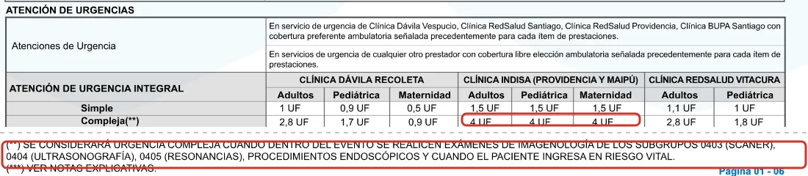
Con ese plan, la misma urgencia son 4 UF, unos $163.804 de copago fijo, según las condiciones del plan. Con Fonasa y seguro complementario pagas entre $213.265 y $305.927, y con Fonasa sola, $444.462. Por eso conviene mirar el copago fijo de urgencia en la clínica donde te atiendes.
Isapre vs. Fonasa + seguro complementario
Los datos del seguro corresponden a las dos pólizas del ejemplo. Los de la Isapre son reglas generales del sistema; la cobertura exacta depende de cada plan.
Por ejemplo, esta es la tabla de edades del Seguro A: el titular queda fuera al cumplir 65 años.
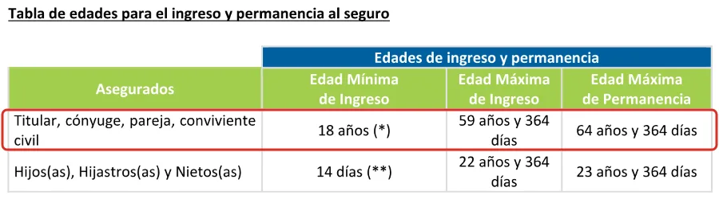
Y este es el resumen de condiciones que la póliza del Seguro B debe incluir por norma de la Comisión para el Mercado Financiero:
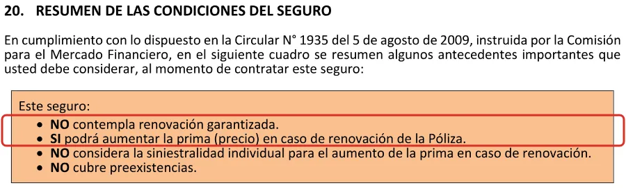
¿Cuándo sí puede convenir?
- Si tu empresa te lo paga o te da un buen descuento. En lo ambulatorio puede rendir, y hay seguros colectivos que cubren mejor que los del ejemplo, porque la empresa negocia sus condiciones, como la BMI o los topes.
- Si eres joven y sano, estás en los tramos B, C o D de Fonasa, y lo que más usas son consultas y exámenes.
- Si tu 7% no alcanza para un buen plan de Isapre y no puedes pagar un adicional.
- Como complemento de un plan de Isapre. Como la Isapre cubre más, el seguro reembolsa sobre una base mayor y sin la rebaja del 50%. Lo contamos en los tips para elegir un buen plan.
Pero si lo que buscas es protección ante una hospitalización o algo grave, un seguro complementario sobre Fonasa no reemplaza a una Isapre. Por eso mucha gente le suma un seguro catastrófico, y entre el 7%, el complementario y el catastrófico, lo que pagas al mes puede acercarse a lo que costaría una Isapre. Su nombre lo dice: es complementario.
Preguntas frecuentes
¿Un seguro complementario reemplaza a una Isapre?
No. Funciona encima de Fonasa o de la Isapre, reembolsando un porcentaje de lo que queda, con topes y deducible, y no tiene GES ni CAEC propios.
¿Qué es la BMI de un seguro complementario?
Es la bonificación mínima que tu sistema de salud tiene que haber cubierto para que el seguro pague. Si Fonasa no cubre nada o cubre poco, el seguro reembolsa menos o nada.
¿Cuánto cuesta un seguro complementario?
En general, entre $30.000 y $50.000 al mes por persona, además de tu 7% de Fonasa. En las pólizas que revisamos, va desde unos $28.027 al mes para una persona sola hasta unos $61.742 por persona, según la edad. Si te lo da tu empresa, puede ser más barato.
¿Un seguro complementario cubre preexistencias?
No. Las pólizas excluyen las enfermedades conocidas o diagnosticadas antes de contratar, y algunas incluso las que estaban en estudio.
¿Hasta qué edad cubre un seguro complementario?
Depende de la póliza. En una de las que revisamos, la cobertura termina a los 65 años; en la otra, se puede mantener hasta los 99.
¿Fonasa o Isapre? Qué conviene más →
¿Cuál es la mejor Isapre en 2026? Tabla comparativa →
Preexistencias en Isapres: ¿qué pasa si me quiero cambiar? →
Los 8 errores más comunes al contratar una Isapre →
¿Tienes Fonasa y un seguro complementario?
Revisamos tu póliza, te decimos cuánto te cubre de verdad y si te conviene seguir así o pasarte a una Isapre. Gratis y sin compromiso.
Quiero que me asesoren →La información de este artículo es general y puede cambiar según la normativa vigente y las condiciones de cada póliza. Los ejercicios usan el arancel 2026 de Fonasa y los aranceles publicados por Clínica Santa María y Clínica Indisa al 17 de septiembre de 2026, que pueden cambiar. Los montos en UF se calcularon con la UF de ese día. Las imágenes de los seguros A y B son extractos de sus pólizas. Para evaluar tu caso particular, te recomendamos una asesoría.